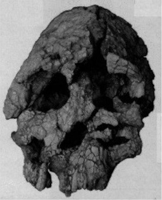
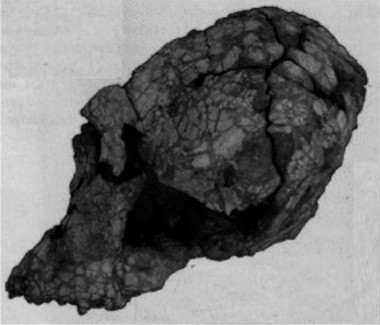
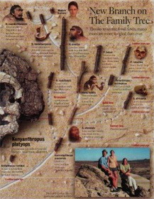
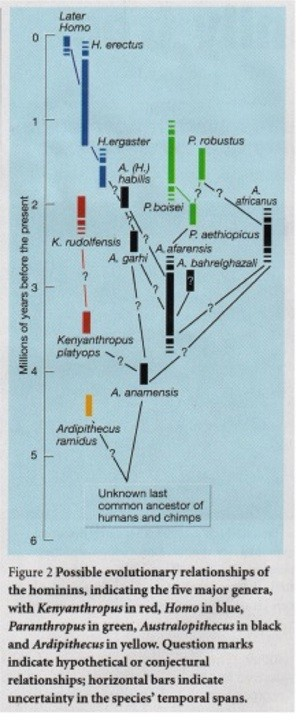

| e-mail - May 2001 |
| by Do-While Jones |
"At present, it is hard to believe any reconstruction of hominid relationships because of the abundance of independently evolved similarities in the hominid fossil record. The complex mosaic of features seen in this new fossil will only exacerbate the problem." 1
Just before the last newsletter went to press, the news media was full of reports about a new "missing link." The problem (for evolutionists) was that the link didn't fit. The discovery was first announced in Nature, so let's give them the honor of explaining what was found.
|
On page 433 of this issue, Leakey and colleagues describe what they assert to be a new genus and species of early hominid, Kenyanthropus platyops. The species, whose type specimen is a spectacular partial skull, called KNM-WT-40000 (Fig. 1), was found at the site of Lomekwi on the western side of Lake Turkana in northern Kenya. The hominid bones discovered there include more than 30 skull and dental fragments, two of which have been assigned to K. platyops. (The other fragments have not yet been assigned to any genus or species.) 2 |
Nature ran these photos of the skull.
|
 |
 |
|---|
Johanson nicknamed his skeleton, "Lucy," because the Beatles song, "Lucy in the Sky With Diamonds" was playing when they came back to camp on the day of the discovery. It would have been appropriate if Leakey had been listening to Jim Croce's Greatest Hits album. She might have named her skull, "Bad, Bad Leroy Brown" because "when they pulled him from the floor, Leroy looked like a jigsaw puzzle with a couple of pieces gone."
|
What was revealed is a beige-colored cranium like the shell of a hard-boiled egg and warped by 3 million years of slow, geologic pressure. The lower jaw is missing. 3 |
The skull is apparently warped because most skulls are much more symmetrical than this one. We can be sure the face wasn't this lopsided when the creature was living. How long it took this skull to become warped is a matter of speculation. It was dated using a radioactive dating method which we believe to be unreliable. It is also a matter of speculation as to what the skull looked like before it was warped. How could one possibly know, for example, how round the head might have been, or how flat the face was? Yet, it has been reported,
|
Platyops has a flatter face and smaller teeth than Lucy. Since different size teeth indicate a different diet, the two hominids probably did not compete for the same food in the woodlands and grasslands of ancient East Africa. 4 |
We don't disagree that they had different size teeth. We think it is a stretch to think that one can infer that two different hominids had different diets based on just the size of the teeth, however. Unfortunately, few people are skeptical of what "scientists say."
Evolutionists are not rejoicing with the discovery of this fossil. Look at what they say.
|
KNM-WT 40000 is almost certainly a new species. The fossil has a dizzying mosaic of features. None of these characteristics is in itself new. But the combination of features is not found in any other known species, and would be hard to explain even if the species were remarkably diverse, with considerable morphological differences between sexes. 5 |
|
"When I first saw it, I couldn't believe it," says Daniel Lieberman of George Washington University in Washington, D.C. "Nobody would have dreamt of this combination of features." In contrast, A. afarensis, the only other hominid known from this period, has large molars and a much smaller, projecting face. 6 |
|
Now, Leakey's latest find, a battered skull unearthed on the western shore of Kenya's Lake Turkana, threatens to topple the one thing we thought we knew about our earliest ancestors; that we are direct descendants of the diminutive species whose most famous member, Lucy, roamed East Africa 2.9 to 3.9 million years ago. 7 |
|
The old notion of a single, almost Biblical lineage in which Lucy begot Homo habilis, who begot Homo erectus, who begot Homo sapiens (us), is out the window. 8 |
An article in Nature carried this subtitle in large type.
The evolutionary history of humans is complex and unresolved. It now looks set to be thrown into further confusion by the discovery of another species and genus, dated to 3.5 million years ago. 9 |
The first sentence following that subtitle was
|
Until a few years ago, the evolutionary history of our species was thought to be reasonably straightforward. 10 |
For the last few years we have been saying that the myth of human evolution has been in a state of disarray. We thank Science for confirming this.
|
The discovery of a 3.5-million-year-old hominid skull and other fossil remains in northern Kenya is shaking the human family tree at its very roots. The new find, reported in this week's issue of Nature, shows that this bushy tree started sprouting branches even earlier than researchers had realized. And the discovery is the second new fossil evidence described in the past month that challenges the exalted status of Australopithecus afarensis, a hominid best known from the partial skeleton "Lucy" and long the leading candidate as the common ancestor of later australopithecines and our own genus, Homo. 11 |
The headline and subtitle on page A2 of the March 22, 2001, San Francisco Chronicle proclaimed
|
Leakey's fossil find in Kenya brings more questions than answers |
The journal Science said,
|
Experts are unanimous in the opinion that Kenyanthropus will complicate efforts to trace the convoluted course of human evolution. 12 But the new discovery, dated smack in the middle of this critical million years, could put a kink into any straight-lined phylogeny, because it doesn't share key features with either A. afarensis or A. anamensis. "It certainly puts a big question mark over the status of A. afarensis as the sole ancestor" of all later hominids, says Chris Stringer of London's Natural History Museum. 13 |
|
Even though Newsweek knew that the fossil "threatens to topple the one thing we thought we knew about our earliest ancestors," they ran a full page diagram entitled, "New Branch on The Family Tree" which makes it appear that every fossil falls neatly into place. |
 |
|---|
|
 |
Compare that to Nature's Figure 2.17 We invite you to count the question marks. We suggest that even the few lines without question marks are equally speculative.
Isn't it interesting that they can find so many branches that lead nowhere, and few (if any) that lead somewhere? Not just for humans, but for every other mammal. Yet we are supposed to believe that all those connecting branches that nobody has ever found really do exist. Isn't it more reasonable to believe that the reason why it is so hard to find any evidence that different species evolved from each other is because they didn't evolve from each other? |
|---|
| Quick links to | |
|---|---|
| Science Against Evolution Home Page |
Back issues of Disclosure (our newsletter) |
| Web Site of the Month |
Topical Index |
Footnotes:
1
Lieberman, Nature, Vol. 410, 22 March 2001, "Another face in our family tree" page 419 https://www.nature.com/articles/35068648
(Ev)
2
ibid.
3
Boston Globe, 22 March 2001, "New fossil adds an early branch to the human family tree"
(Ev)
4
Newsweek, April 2, 2001, "The New Old Man"
(Ev)
5
Lieberman, Nature, Vol. 410, 22 March 2001, "Another face in our family tree" page 419 https://www.nature.com/articles/35068648
(Ev)
v)
6
Michael Balter, Science Vol 291, 23 March 2001, "Fossil Tangles Roots of Human Family Tree" page 2289
(Ev)
7
Newsweek, April 2, 2001, "The New Old Man"
(Ev)
8
ibid.
9
Lieberman, Nature, Vol. 410, 22 March 2001, "Another face in our family tree" page 419 https://www.science.org/doi/10.1126/science.291.5512.2289
(Ev)
10
ibid.
11
Michael Balter, Science Vol. 291, 23 March 2001, "Fossil Tangles Roots of Human Family Tree" page 2289 https://www.science.org/doi/10.1126/science.291.5512.2289
(Ev)
12
ibid. page 2291
13
ibid.
14
Lieberman, Nature, Vol. 410, 22 March 2001, "Another face in our family tree" page 419 https://www.nature.com/articles/35068648
(Ev)
15
Boston Globe, 22 March 2001, "New fossil adds an early branch to the human family tree"
(Ev)
15
Newsweek, April 2, 2001, "The New Old Man"
(Ev)